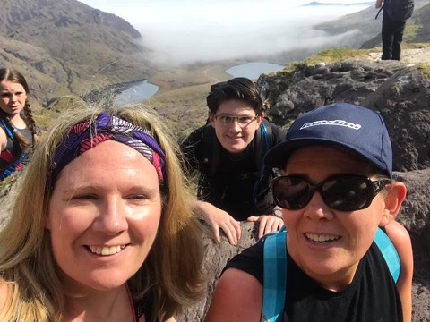

About Me
- My name is Rachel Doogue.
- I will be turning 20 this October.
- I have lived my entire life in Carlow Town. Attending local schools Scoil Mhuire Gan Smal, then St. Leos College and finally IT Carlow.
- I have two younger sisters named Emma and Sarah. My mom is from Kerry and my dad is from Carlow. I have a dog and his name is Scruffy. He is a 13 year old West High-Land Terrior.
- I am a second year software development student at the Institute of Technology Carlow.
- I play rugby union.
- Over the summer I climbed Carrauntoohil with my mom and my aunt.

E-mail: C00237335@itcarlow.ie